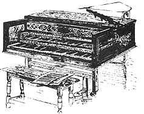

Purchase two cards of thumbtacks, enough for eighty-eight keys. Choose tacks with bare metal heads for a loud ricky-tick/harpsichord sound and pick plastic-coated heads for a softer, less metallic tone.
Now, raise or unhinge the front of the piano to get at the hammers which are oval shape, made of felt and strike the strings. Gently pull a hammer toward you and feel for the spot where it hits home. You should find three grooves or string imprints. Locate the middle groove and push a tack firmly into its center. Press a tack into each hammer and replace the front of the piano.
Now break out some beer barrel songs or Bach or Scariatti.
The new sound is louder than the old and the keyboard action may be faster. If your hand falls heavy on the keys, a rousing ricky-tick tone will result. A lighter touch will bring out the delicate strains of a harpsichord and a whisper-light stroke might produce sounds approaching that of a clavichord. Sometimes, if the humidity, the mood, and the music are all just right you may feel like John Sebastian Bach himself at the keyboard of a rosewood harpsichord in a vast Baroque music hall.
If you get tired of the new sound you'll find that the tacks come out easily . . . but save them just in case you again get the urge to transport your playing back in time.
|
 Harpsichord in the Washington Mansion, Mount Vernon, Virginia. |
|
|